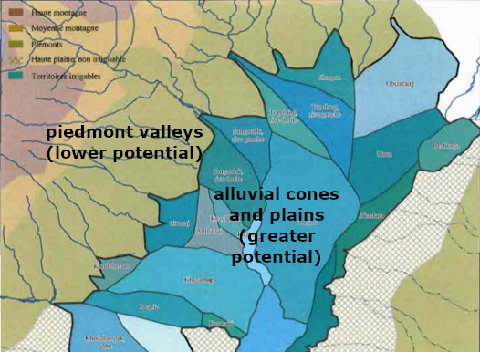
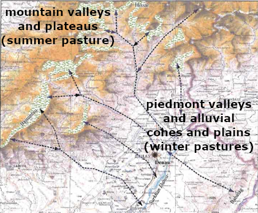
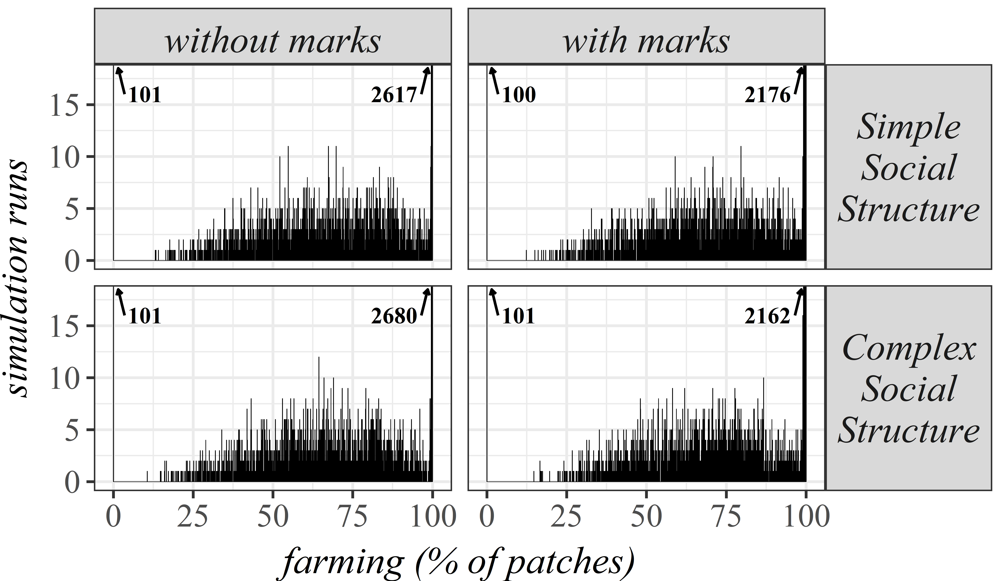

A game of…
chairs, Musical Chairs
A theory-building Agent-Based approach to agro-pastoral landscapes in Eurasia
Andreas Angourakis, Agnese Fusaro, Verónica Martínez Ferreras, Josep M. Gurt Session #672 - CAA @ EAA: Computational Models in Archaeology
available at https://andros-spica.github.io/EAA2018_simulation/


Explaining land use patterns

{kind=link}
{kind=link}
{kind=link}
(NRCS_Photo_Gallery).jpg){kind=link}
{kind=link}
{kind=link}
{kind=link}
{kind=link}
{kind=link}
Farming
Herding

Stride, S. (2005). Géographie archéologique de la province du Surkhan Darya (Ouzbékistan du sud / Bactriane du nord). Ph.D thesis, Université Paris I Panthéon-Sorbonne.
Overlapping niches: Stakeholders must cooperate or compete for land use
"Bad" question
Are farming-herding interactions competitive or cooperative?
"Good" questions
Through which mechanisms
and under which conditions may
stakeholders cooperate or compete?
What impact does these aspects have on the existence of certain land use patterns?
Modeling framework
- For exploring several mechanisms
- Land use competition as the core mechanism
- Progressive and modular theory-building approach
Musical Chairs model
- Limited area
- Constant pressure
- competitive and non-competitive periods
- Competitive situations resolved asymmetrically
→ Strong bimodality
→ Bias favouring farming
Publications ⇓
Musical Chairs model publications
ANGOURAKIS, A., RONDELLI, B., STRIDE, S., RUBIO–CAMPILLO, X., BALBO, A. L., TORRANO, A., MARTÍNEZ, V., MADELLA, M.; GURT, J. M. 2014, “Land Use Patterns in Central Asia. Step 1: The Musical Chairs Model”, Journal of Archaeological Method and Theory, 21: 405-425. http://dx.doi.org/10.1007/s10816–013–9197–0.
ANGOURAKIS, A. 2014, “Exploring the oases of Central Asia: A model of interaction between mobile livestock breeding and sedentary agriculture”, in Antela-Bernárdez, B. and Vidal, J. (eds.) Central Asia in Antiquity: Interdisciplinary Approaches, BAR International Series 2665, pp. 3-16.
ANGOURAKIS, A., 2016a (February 3). "Musical Chairs" (Version 1). CoMSES Computational Model Library. https://www.openabm.org/model/4880/version/1
Nice Musical Chairs model
- Group dynamics
- Pairing
- Group management
- Pasture tenure
Main results


Publications ⇓
- Land use competition
+ open access =
bias towards farming - Group competition =
larger groups - Pairing has the smaller effect
- Management add to diversity, assuming group target is arbitrary
- Restrictive access greatly cancels the asymmetry caused by herding mobility
Nice Musical Chairs model publications
Angourakis, A., Salpeteur, M., Martínez, V., and Gurt, J.M. (2017). The Nice Musical Chairs model. Exploring the role of competition and cooperation between farming and herding in the formation of land use patterns in arid Afro-Eurasia. Journal of Archaeological Method and Theory, 21: 405-425. http://dx.doi.org/10.1007/s10816-016-9309-8.
Angourakis, A. (2017, January 9). "Nice Musical Chairs" (Version 5). CoMSES Computational Model Library. https://www.openabm.org/model/4885/version/5
Nomad Frontier model
farming groups or herding groups
- Spatial logistics
- Alliance dynamics
- Pasture tenure
Nomad Frontier model

- Spatial logistics:
- Distance as a factor
- Farming and herding group centres

Nomad Frontier model
- Alliance dynamics:
- Emerging hierarchical structures
- Production and tribute
- Governance influence
- Affinity and Alliance formation
-
Pasture tenure→ Territorial marks

Main results

- Bias towards farming is even clearer, presumably because of spatial relations
- Territorial marking (signal) has a milder effect compared to 'restrictive access' (social norm)
- Social complexity, as defined in the model (alliance dynamics), has virtually no effect on the diversity of land use patterns.
Main results

- Distibution of farming centres
increased probability of big oasis if farming centres position is not constrained - Marginalisation of herding groups:
Herding Centre mobility cause them to be 'pushed' more easily
Main results


- Farming predominance linked to centralisation
- ... while herding predominance is associated with more and
more autonomous groups/alliances
$$Autonomy index = {{numAutonomousEntities * numGroups} \over maxNumGroups^2}$$
$$Land use centralization index =$$
$${bigAutonomousEntityTerritory \over {(countAutonomousEntities * meanAutonomousEntityTerritory)}}$$
Simulations: 1000 steps (years). Steps shown: 5, 10, and 100 steps intervals up to 1000.
Conclusions
- Land use competition favours farming
- "Big oases" tend to be centralised territories (few groups)
- Any association between farming and herding stakeholders (explored so far) tend to benefit farming in the long run
- The most effective strategy (explored so far) for herding stakeholder is to invest in territorial marks
A game of…
chairs, Musical Chairs
A theory-building Agent-Based approach to agro-pastoral landscapes in Eurasia
Andreas Angourakis, Agnese Fusaro, Verónica Martínez Ferreras, Josep M. Gurt Session #672 - CAA @ EAA: Computational Models in Archaeology
THANK YOU!
address any questions to A. Angourakis: andros.spica@gmail.com